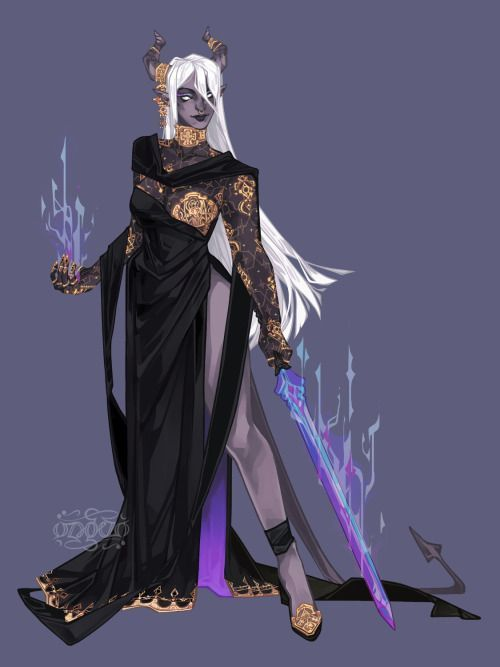
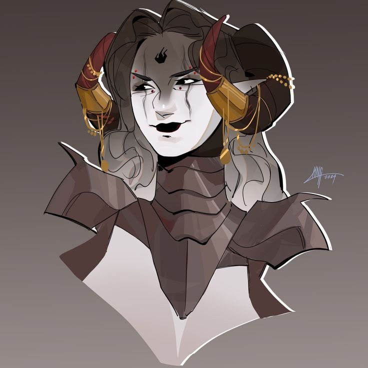
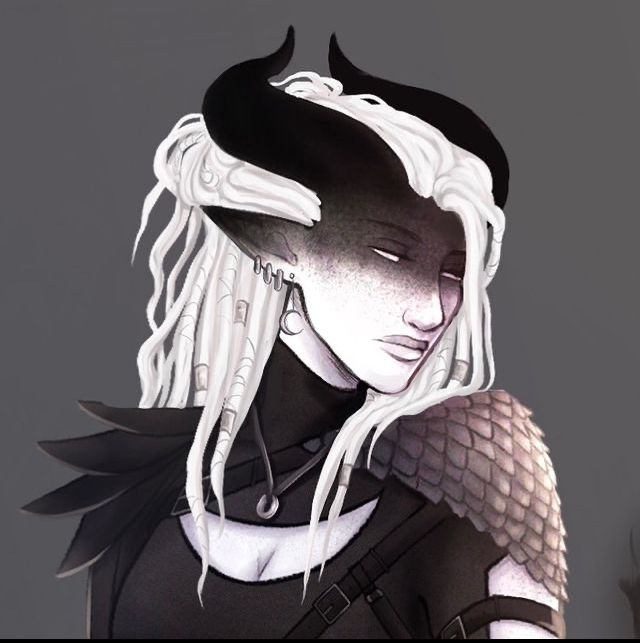
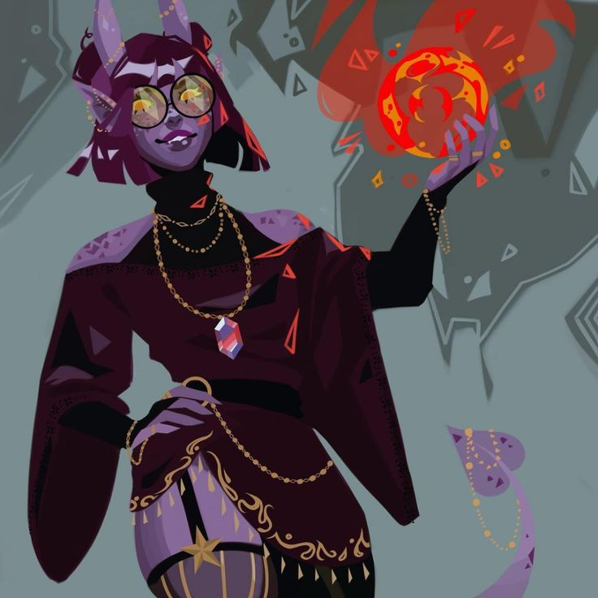
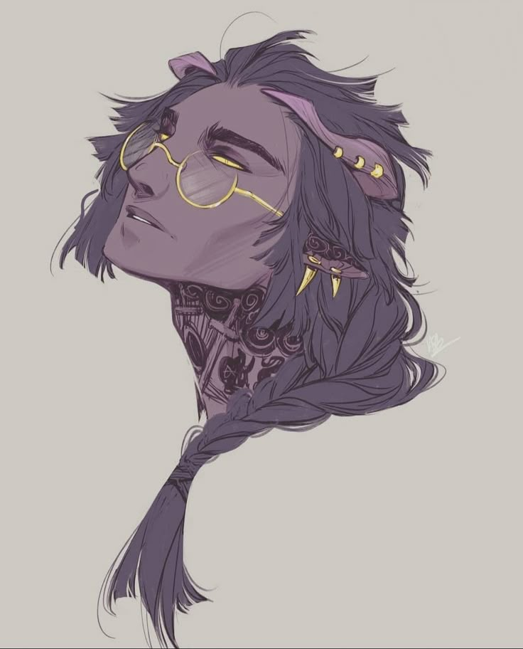
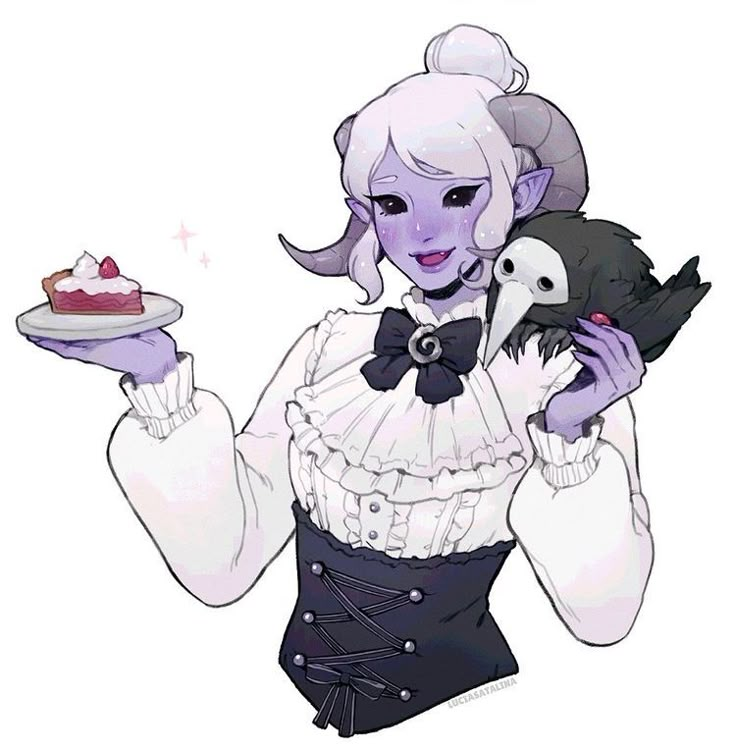

A Família Cecília administra Korchab, o porto internacional do Reino Polaris — porta de entrada para exportações, imigrantes e investidores do mais alto escalão. Sua história começa com o olhar atento da Rainha Dileia, que reconheceu nas vestes de simples plebeus a maestria da mais alta costura. Dali nasceu uma amizade longa e forte entre a família e a coroa.
✦ CASAL FUNDADOR

✦ Duq· Mãe
Seraphina Cecília
Mantém contato direto com a Família Polar, atuando como assistente e confidente dos monarcas. É o rosto da família Cecília na corte real — discreta, precisa e de confiança inabalável.

✦ família cecília · tiefling
Josen Cecília
Administra a segurança dos portos de Korchab com mão firme — tudo que entra ou sai do porto internacional passa pelo seu olhar. Nada escapa à Marquesa.
✦ FILHOS

✦ família cecília · tiefling · filha mais velha
Bianca Cecília
Trabalha ao lado da mãe Josen nos portos, assessorando a fiscalização de empresas estrangeiras e coordenando o acolhimento de imigrantes que chegam a Korchab.

✦ família cecília · tiefling · segunda filha
Rose Cecília
A gêmea mais velha trilhou seu próprio caminho longe dos portos — leciona na Escola de Magias de Korchab, onde ensina sozinha e com dedicação integral às artes arcanas.

✦ família cecília · tiefling · terceiro filho
Treson Cecília
Trabalha diretamente com Seraphina na corte como consultor de moda real — é o olho da família Cecília para a estética do reino, honrando a herança que colocou a família no mapa.

✦ família cecília · tiefling · filha mais nova
Voske Cecília
A caçula da família estuda gastronomia e faz um estágio no palácio real — a mais nova da linhagem ainda encontra seu caminho, mas já o encontra nos melhores salões do reino.